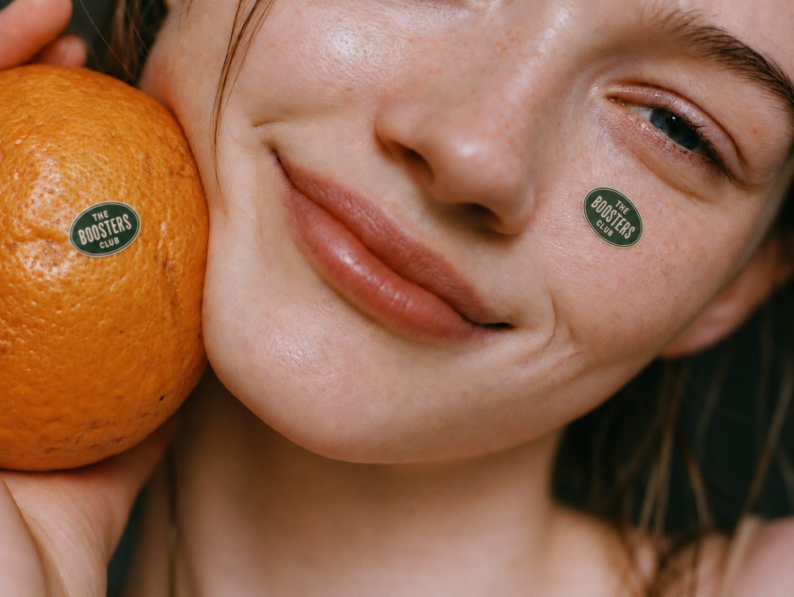

The Boosters Club

The Weekly Boost.
MembershipYou have six recipes on the house. Join the Club for a brand-new booster recipe every Friday, the full recipe archive, and a shopping list to go with each one.
Club member
£3.99 / month
- A new booster recipe every Friday
- The full, growing recipe archive
- Weekly shopping lists, ready to print
- First dibs on Club merch drops